Recommended datasets
The package handles a large number of datasets. Even though it is possible to test developed methods on all these datasets, some combinations make more sense. We export several possible combinations. Before testing methods, the datasets need to be downloaded.
Small datasets
We grouped all datasets which download size is smaller than 1GB. These are often cropped and can be used for relatively quick testing of developed methods. We recommend this group or its subset as a starting point.
datasets.names_small
wildlife_datasets.datasets.aerial_cattle.AerialCattle2017
wildlife_datasets.datasets.beluga_id.BelugaIDv2
wildlife_datasets.datasets.cobra_re_identification_youngstock.CoBRAReIdentificationYoungstock
wildlife_datasets.datasets.ctai.CTai
wildlife_datasets.datasets.czoo.CZoo
wildlife_datasets.datasets.dog_face_net.DogFaceNet
wildlife_datasets.datasets.elpephants.ELPephants
wildlife_datasets.datasets.friesian_cattle.FriesianCattle2015v2
wildlife_datasets.datasets.friesian_cattle.FriesianCattle2017
wildlife_datasets.datasets.holstein_cattle_recognition.HolsteinCattleRecognition
wildlife_datasets.datasets.ipanda.IPanda50
wildlife_datasets.datasets.macaque_faces.MacaqueFaces
wildlife_datasets.datasets.mpdd.MPDD
wildlife_datasets.datasets.nyala_data.NyalaData
wildlife_datasets.datasets.polar_bear_vid_id.PolarBearVidID
wildlife_datasets.datasets.reunion_turtles.ReunionTurtles
wildlife_datasets.datasets.sea_turtle_id.SeaTurtleIDHeads
wildlife_datasets.datasets.southern_province_turtles.SouthernProvinceTurtles
wildlife_datasets.datasets.stripe_spotter.StripeSpotter
wildlife_datasets.datasets.zakynthos_turtles.ZakynthosTurtles

 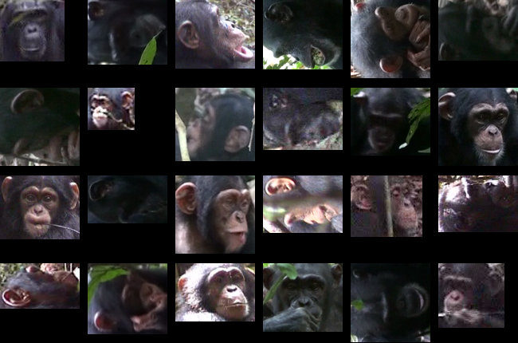
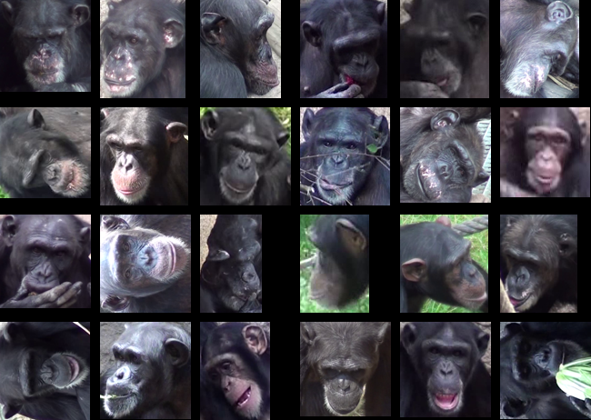
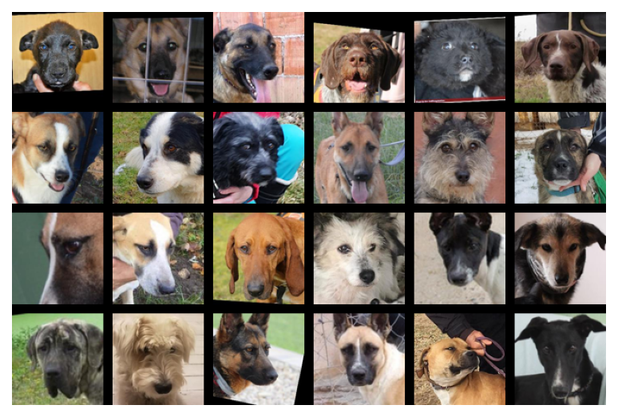
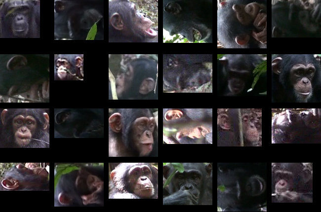
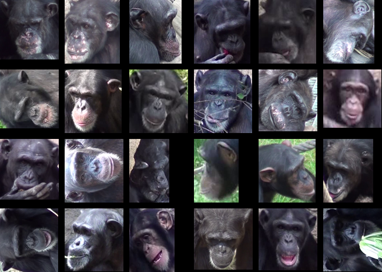
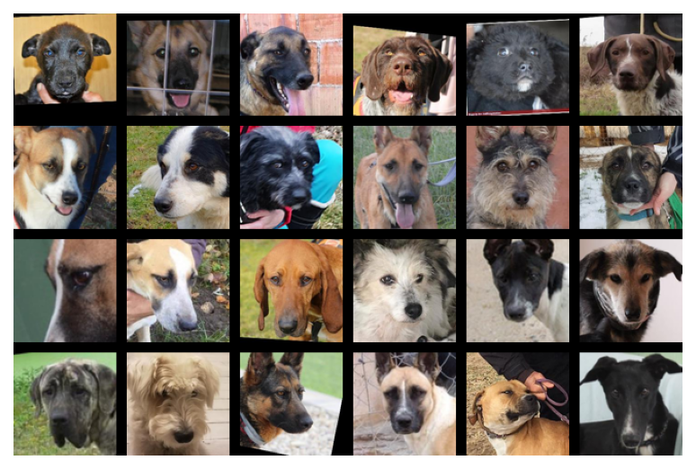

 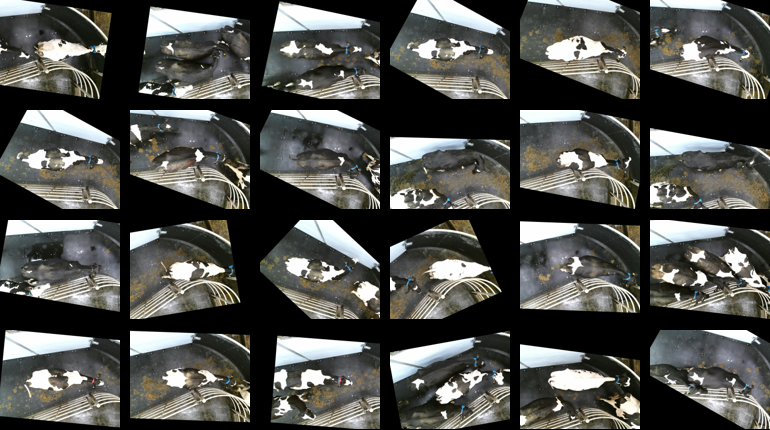
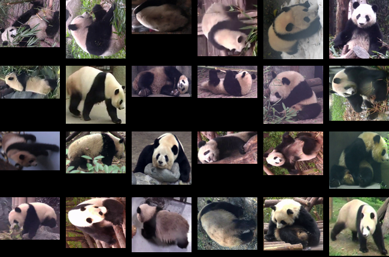
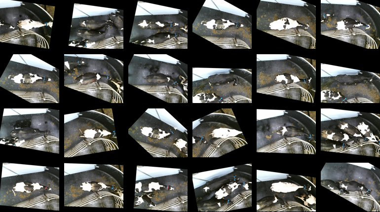
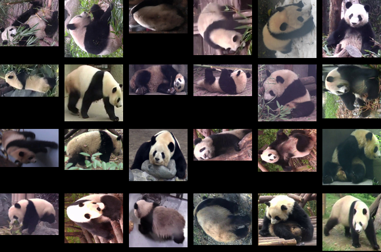


 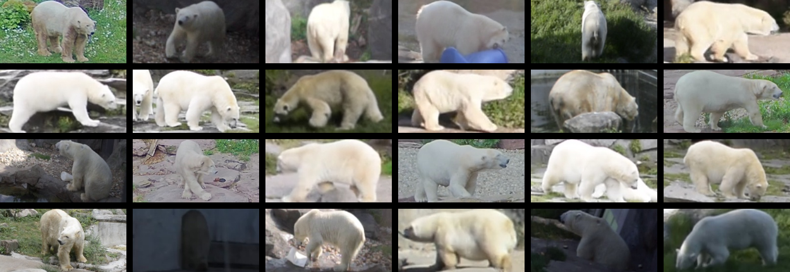
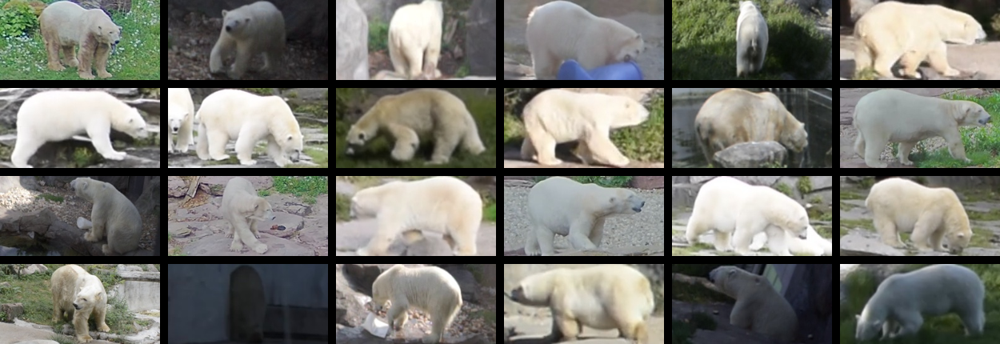


Wild datasets
The wild datasets are usually the most difficult one containing uncropped image (often bounding boxes are provided though) of animals in their natural habitat. None of the dataset is extracted from video (unlike many datasets taken in controlled environments) and animals are depicted from multiple poses and distances.
datasets.names_wild
wildlife_datasets.datasets.amvrakikos_turtles.AmvrakikosTurtles
wildlife_datasets.datasets.balearic_lizard.BalearicLizard
wildlife_datasets.datasets.beluga_id.BelugaIDv2
wildlife_datasets.datasets.czechlynx.CzechLynxv2
wildlife_datasets.datasets.elpephants.ELPephants
wildlife_datasets.datasets.giraffe_zebra_id.GiraffeZebraID
wildlife_datasets.datasets.happy_whale.HappyWhale
wildlife_datasets.datasets.humpback_whale_id.HumpbackWhaleID
wildlife_datasets.datasets.hyena_id.HyenaID2022
wildlife_datasets.datasets.leopard_id.LeopardID2022
wildlife_datasets.datasets.ndd.NDD20v2
wildlife_datasets.datasets.noaa_right_whale.NOAARightWhale
wildlife_datasets.datasets.nyala_data.NyalaData
wildlife_datasets.datasets.reunion_turtles.ReunionTurtles
wildlife_datasets.datasets.seal_id.SealID
wildlife_datasets.datasets.sea_turtle_id.SeaTurtleID2022
wildlife_datasets.datasets.southern_province_turtles.SouthernProvinceTurtles
wildlife_datasets.datasets.stripe_spotter.StripeSpotter
wildlife_datasets.datasets.wild_raptor_id.WildRaptorID
wildlife_datasets.datasets.whaleshark_id.WhaleSharkID
wildlife_datasets.datasets.zakynthos_turtles.ZakynthosTurtles


 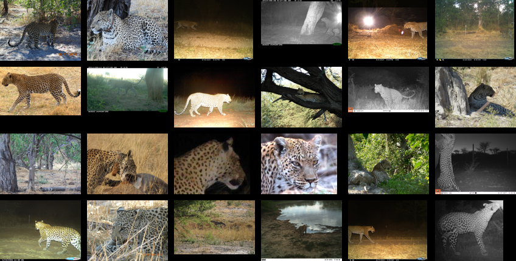
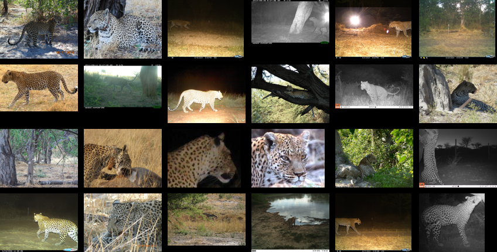
 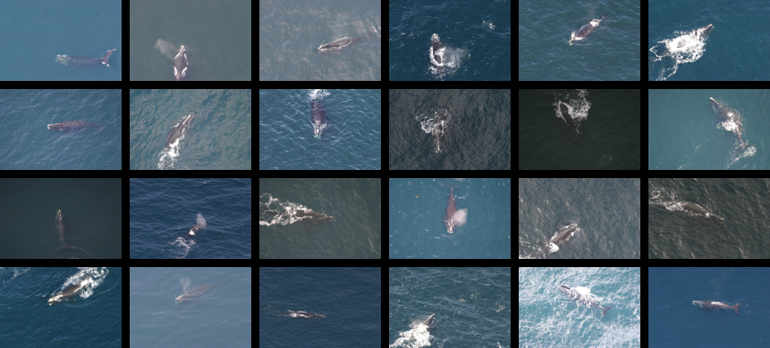
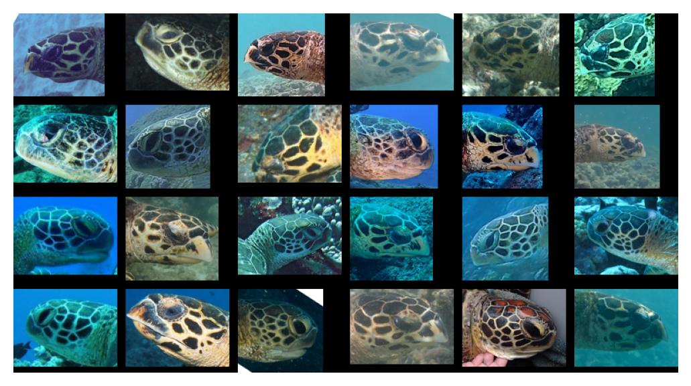
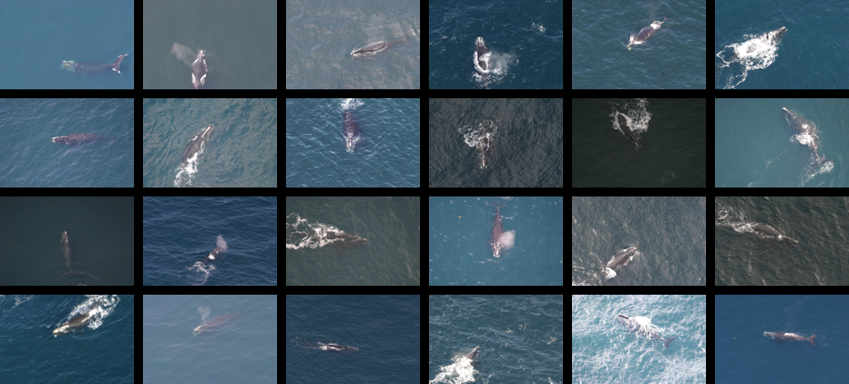
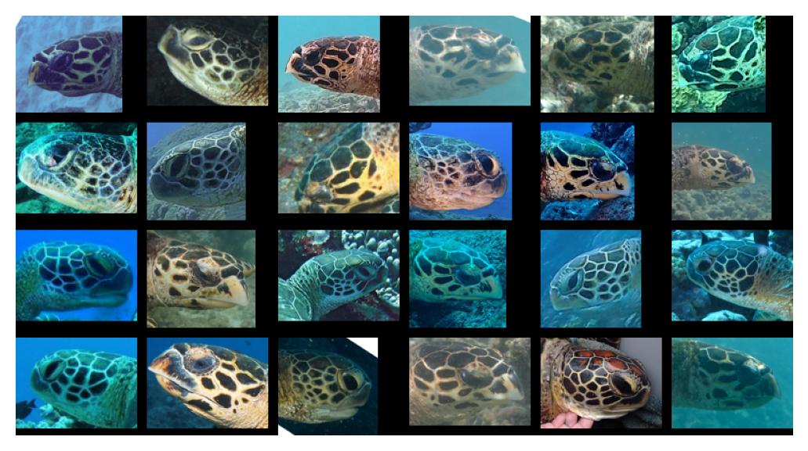


Transfer learning
The package handles multiple different datasets of the same or similar animal species. Then it is natural to train a method on one dataset and evaluate the performance on another dataset.
Sea turtles
There are two sea turtle datasets. While SeaTurtleIDHeads (or its uncropped version SeaTurtleID) contains loggerhead turtles, ZindiTurtleRecall shows green turtles.
datasets.names_turtles
wildlife_datasets.datasets.amvrakikos_turtles.AmvrakikosTurtles
wildlife_datasets.datasets.reunion_turtles.ReunionTurtles
wildlife_datasets.datasets.sea_turtle_id.SeaTurtleIDHeads
wildlife_datasets.datasets.southern_province_turtles.SouthernProvinceTurtles
wildlife_datasets.datasets.zakynthos_turtles.ZakynthosTurtles
wildlife_datasets.datasets.zindi_turtle_recall.ZindiTurtleRecall
wildlife_datasets.datasets.turtles_of_smsrc.TurtlesOfSMSRC
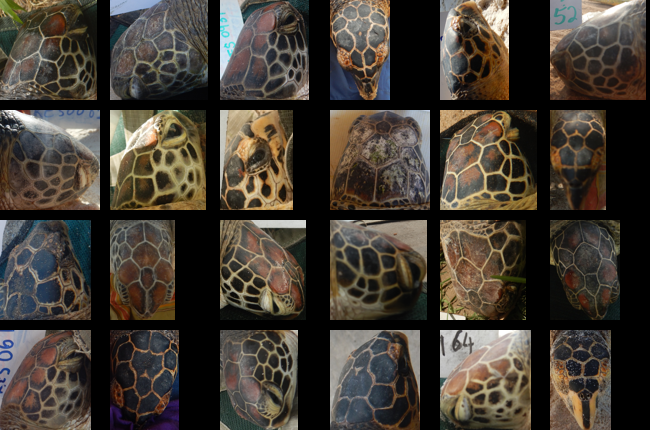
Cows
Multiple dataset show the Friesian cows. While all these datasets besides CowDataset were captured at one place, they show the cows in different settings.
datasets.names_cows
wildlife_datasets.datasets.aerial_cattle.AerialCattle2017
wildlife_datasets.datasets.cattle_muzzle.CattleMuzzle
wildlife_datasets.datasets.cobra_re_identification_youngstock.CoBRAReIdentificationYoungstock
wildlife_datasets.datasets.cow_dataset.CowDataset
wildlife_datasets.datasets.cows.Cows2021v2
wildlife_datasets.datasets.friesian_cattle.FriesianCattle2015v2
wildlife_datasets.datasets.friesian_cattle.FriesianCattle2017
wildlife_datasets.datasets.holstein_cattle_recognition.HolsteinCattleRecognition
wildlife_datasets.datasets.multi_cam_cows.MultiCamCows2024
wildlife_datasets.datasets.open_cows.OpenCows2020
 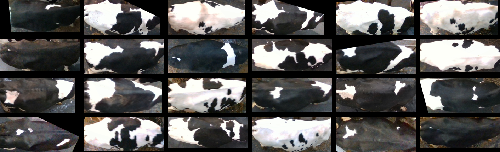
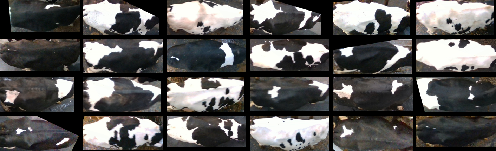


Dogs
Two datasets show images of various dog breeds.
datasets.names_dogs
wildlife_datasets.datasets.dog_face_net.DogFaceNet
wildlife_datasets.datasets.mpdd.MPDD
Giraffes
There are four datasets with zebras. GiraffeZebraID contains both giraffes and zebras and StripeSpotter is the oldest public wildlife dataset. The other two datasets pose certain issues, namely, Giraffes is automatically labelled by Hotspotter (there is no guarantee of the label correctness), SMALST does not depict real animals but generated images from 3D models (based on real animals).
datasets.names_giraffes
wildlife_datasets.datasets.giraffe_zebra_id.GiraffeZebraID
wildlife_datasets.datasets.giraffes.Giraffes
wildlife_datasets.datasets.smalst.SMALST
wildlife_datasets.datasets.stripe_spotter.StripeSpotter
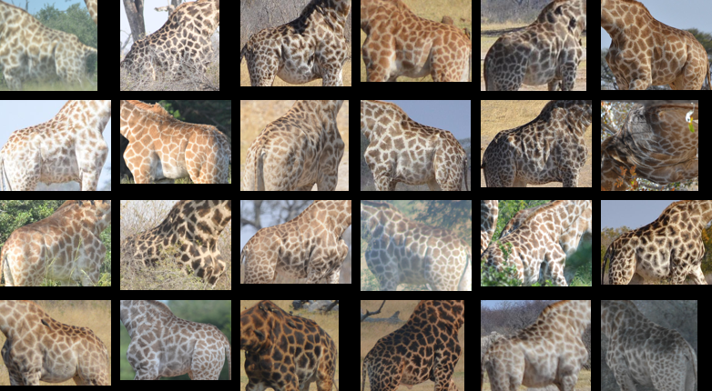

Primates
The datasets CTai, CZoo and MacaqueFaces are very similar, all containing a relatively low resolution head images of chimpanzees (CTai and CZoo) or macaques (MacaqueFaces).
datasets.names_primates
wildlife_datasets.datasets.bristol_gorillas_2020.BristolGorillas2020
wildlife_datasets.datasets.ctai.CTai
wildlife_datasets.datasets.czoo.CZoo
wildlife_datasets.datasets.macaque_faces.MacaqueFaces
wildlife_datasets.datasets.prim_face.PrimFace
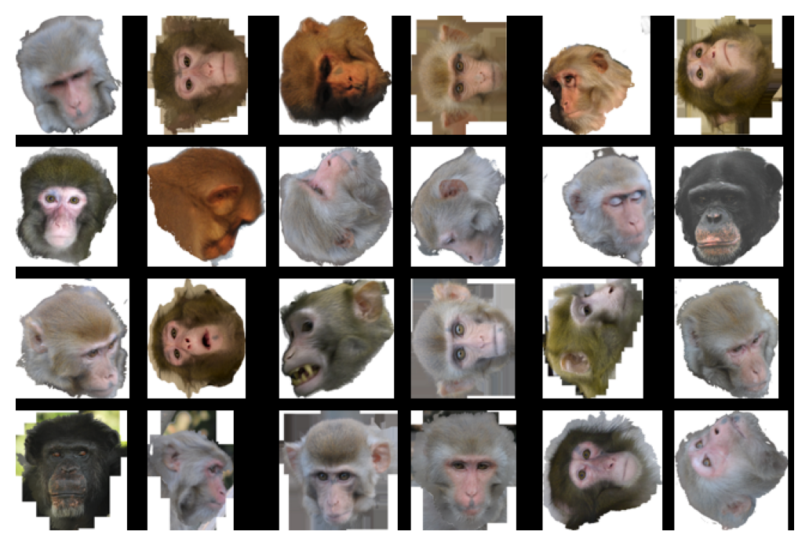
Whales, dolphins and sharks
We group these three relatively distant mammals into one group because they can all be recognize by their fin shape. The group for transfer learning will be probably the most difficult because it contains various animals takes from various poses. BelugaID is a dataset of beluga whales taken from the top, while HumpbackWhaleID contain images of the tail fin of humpback whales. HappyWhale combines both these poses. NOAARightWhale is a dataset of right whales taken from a relatively large distance. The last two datasets do not depict whales. While NDD20 is a dataset of dolphins, WhaleSharkID is a dataset of whale sharks.
datasets.names_whales
wildlife_datasets.datasets.beluga_id.BelugaIDv2
wildlife_datasets.datasets.happy_whale.HappyWhale
wildlife_datasets.datasets.humpback_whale_id.HumpbackWhaleID
wildlife_datasets.datasets.ndd.NDD20v2
wildlife_datasets.datasets.noaa_right_whale.NOAARightWhale
wildlife_datasets.datasets.whaleshark_id.WhaleSharkID
Segmentated datasets
For researchers interested in the role of segmentation, multiple datasets have segmented and non-segmented version. These include BirdIndividualID, SealID, SeaTurtleID and SMALST.
Problematic datasets
There are a few datasets which we recommend not to use. AAUZebraFish is more of a tracking dataset. Drosophila contains a huge number of fly images extracted from videos. LionData contain only a few images of each lion; moreover, most of the images contain only a small part of the lion (such as an ear).